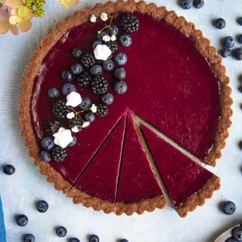

Home
Blueberry Pie

Crispy Blueberry pie with crumble dough
An easy-to-make but oh so delicious blueberry shortcrust pie.
So go out into the woods and pick 1 liter of blueberries that you put in the bottom of a mold.
Sprinkle classic shortcrust pastry over and bake in the oven.
Serve your blueberry pie warm with smooth vanilla sauce, whipped cream or ice cream.
Ingredients
Filling
- 1 liter blueberries
- 1 dl sugar (just over)
- 2 tbsp potato flour
Shortbread
- 150g butter
- 3/4 cup sugar
- 3 dl wheat flour
For serving
- Custard sauce
- Whipped cream
- Ice cream/li>
Steps
- Preheat the oven to 200°C.
- Filling: Rinse and clean the berries. Mix them with sugar and potato flour.
- Shortcrust pastry: Melt the butter to make shortcrust pastry. Stir in the sugar and flour. Stir until it forms a dough. Let cool slightly.
- Line the bottom of a pie dish with the blueberries. Crumble the dough over it. Bake the pie for 15-20 minutes in the oven.
- To serve: Serve with Marsana sauce, whipped cream or ice cream.